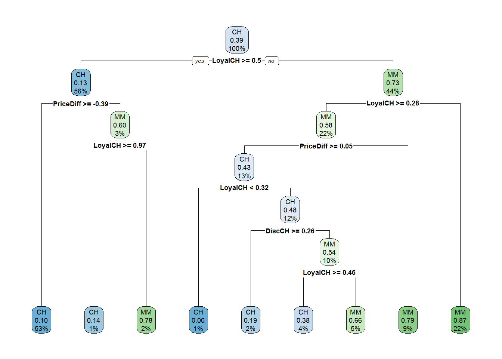
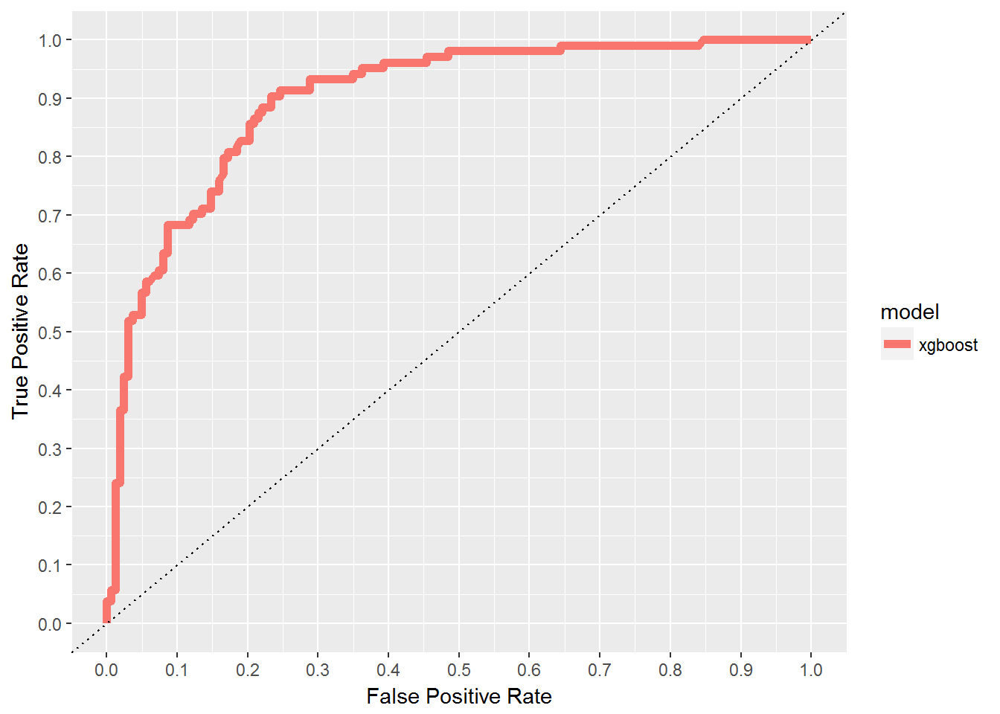
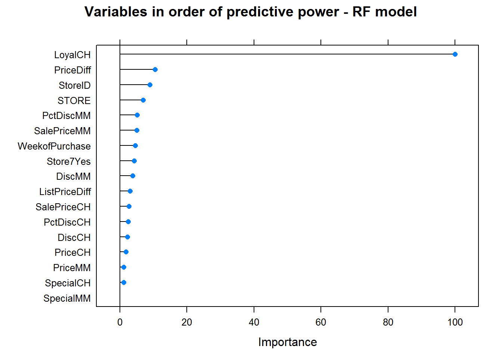
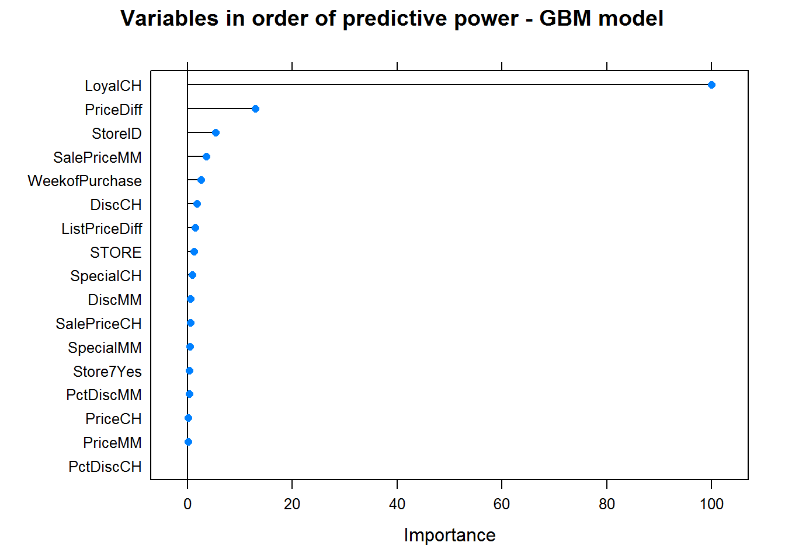
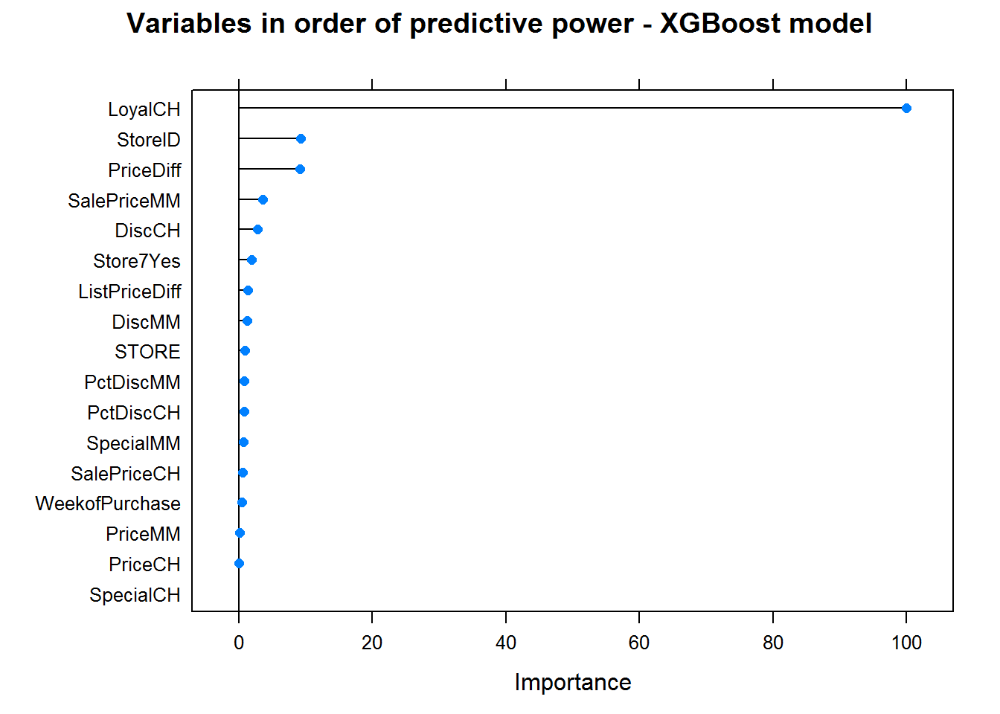
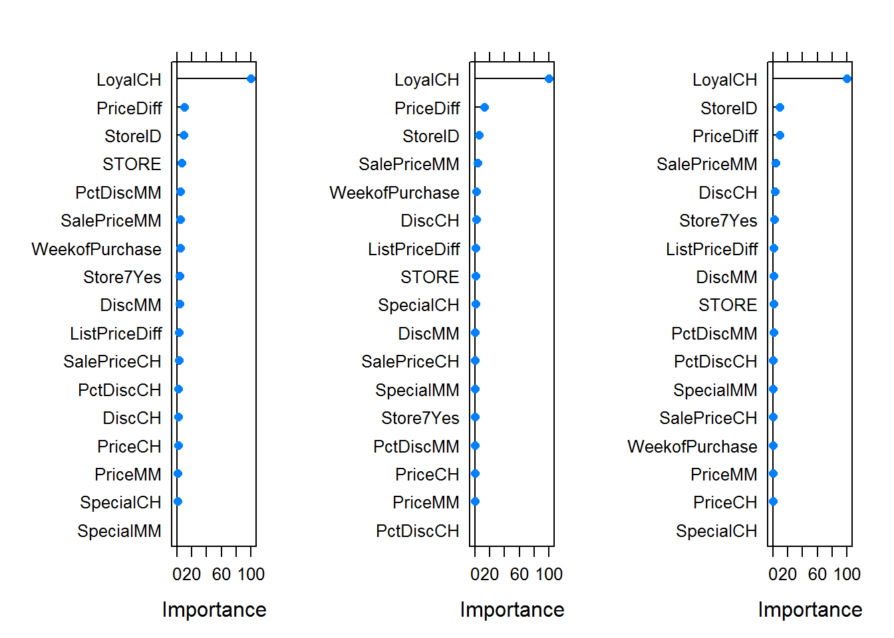

Load libraries
library(data.table)
library(caret)
library(rpart)
library(rpart.plot)
library(xgboost)
library(randomForest)
library(gbm)
library(ISLR)
library(skimr)
library(ROCR)
library(pROC)
library(gridExtra)Task 1:
The data set is OJ dataset from the ISLR package. This dataset records purchases of two types of orange juices and presents customer and product characteristics as features. The goal is to predict which of the juices is chosen in a given purchase situation.
Load & Visualize
# Load the data
data <- data.table(OJ)
skim(data)## Skim summary statistics
## n obs: 1070
## n variables: 18
##
## -- Variable type:factor --------------------------------------------------------
## variable missing complete n n_unique top_counts ordered
## Purchase 0 1070 1070 2 CH: 653, MM: 417, NA: 0 FALSE
## Store7 0 1070 1070 2 No: 714, Yes: 356, NA: 0 FALSE
##
## -- Variable type:numeric -------------------------------------------------------
## variable missing complete n mean sd p0 p25
## DiscCH 0 1070 1070 0.052 0.12 0 0
## DiscMM 0 1070 1070 0.12 0.21 0 0
## ListPriceDiff 0 1070 1070 0.22 0.11 0 0.14
## LoyalCH 0 1070 1070 0.57 0.31 1.1e-05 0.33
## PctDiscCH 0 1070 1070 0.027 0.062 0 0
## PctDiscMM 0 1070 1070 0.059 0.1 0 0
## PriceCH 0 1070 1070 1.87 0.1 1.69 1.79
## PriceDiff 0 1070 1070 0.15 0.27 -0.67 0
## PriceMM 0 1070 1070 2.09 0.13 1.69 1.99
## SalePriceCH 0 1070 1070 1.82 0.14 1.39 1.75
## SalePriceMM 0 1070 1070 1.96 0.25 1.19 1.69
## SpecialCH 0 1070 1070 0.15 0.35 0 0
## SpecialMM 0 1070 1070 0.16 0.37 0 0
## STORE 0 1070 1070 1.63 1.43 0 0
## StoreID 0 1070 1070 3.96 2.31 1 2
## WeekofPurchase 0 1070 1070 254.38 15.56 227 240
## p50 p75 p100 hist
## 0 0 0.5 <U+2587><U+2581><U+2581><U+2581><U+2581><U+2581><U+2581><U+2581>
## 0 0.23 0.8 <U+2587><U+2581><U+2581><U+2582><U+2581><U+2581><U+2581><U+2581>
## 0.24 0.3 0.44 <U+2582><U+2582><U+2582><U+2582><U+2587><U+2586><U+2581><U+2581>
## 0.6 0.85 1 <U+2585><U+2582><U+2583><U+2583><U+2586><U+2583><U+2583><U+2587>
## 0 0 0.25 <U+2587><U+2581><U+2581><U+2581><U+2581><U+2581><U+2581><U+2581>
## 0 0.11 0.4 <U+2587><U+2581><U+2581><U+2582><U+2581><U+2581><U+2581><U+2581>
## 1.86 1.99 2.09 <U+2582><U+2585><U+2581><U+2587><U+2581><U+2581><U+2585><U+2581>
## 0.23 0.32 0.64 <U+2581><U+2581><U+2582><U+2582><U+2583><U+2587><U+2583><U+2582>
## 2.09 2.18 2.29 <U+2581><U+2581><U+2581><U+2583><U+2581><U+2587><U+2583><U+2582>
## 1.86 1.89 2.09 <U+2581><U+2581><U+2581><U+2582><U+2586><U+2587><U+2585><U+2581>
## 2.09 2.13 2.29 <U+2581><U+2581><U+2583><U+2583><U+2581><U+2582><U+2587><U+2586>
## 0 0 1 <U+2587><U+2581><U+2581><U+2581><U+2581><U+2581><U+2581><U+2582>
## 0 0 1 <U+2587><U+2581><U+2581><U+2581><U+2581><U+2581><U+2581><U+2582>
## 2 3 4 <U+2587><U+2583><U+2581><U+2585><U+2581><U+2585><U+2581><U+2583>
## 3 7 7 <U+2583><U+2585><U+2585><U+2583><U+2581><U+2581><U+2581><U+2587>
## 257 268 278 <U+2586><U+2585><U+2585><U+2583><U+2585><U+2587><U+2586><U+2587>Data prep
# Create train(75%) and test(25%) data sets
train_ratio <- 0.75
set.seed(987)
train_indices <- createDataPartition(y = data[["Purchase"]],
times = 1,
p = train_ratio,
list = FALSE)
train_set <- data[train_indices,]
test_set <- data[-train_indices,]set.seed(987)
train_contr <- trainControl(method = "cv",
number = 10,
classProbs = TRUE, # binary outcome
verboseIter = TRUE,
summaryFunction = twoClassSummary,
selectionFunction = "oneSE") # select based on the 1 SE rule
set.seed(987)
simple_class_tree <- train(Purchase ~.,
data = train_set,
method = "rpart",
tuneGrid = data.frame(cp = c(0.001, 0.005, 0.01, 0.05, 0.1)),
trControl = train_contr,
metric = "ROC"
)## + Fold01: cp=0.001
## - Fold01: cp=0.001
## + Fold02: cp=0.001
## - Fold02: cp=0.001
## + Fold03: cp=0.001
## - Fold03: cp=0.001
## + Fold04: cp=0.001
## - Fold04: cp=0.001
## + Fold05: cp=0.001
## - Fold05: cp=0.001
## + Fold06: cp=0.001
## - Fold06: cp=0.001
## + Fold07: cp=0.001
## - Fold07: cp=0.001
## + Fold08: cp=0.001
## - Fold08: cp=0.001
## + Fold09: cp=0.001
## - Fold09: cp=0.001
## + Fold10: cp=0.001
## - Fold10: cp=0.001
## Aggregating results
## Selecting tuning parameters
## Fitting cp = 0.01 on full training setsimple_class_tree## CART
##
## 803 samples
## 17 predictor
## 2 classes: 'CH', 'MM'
##
## No pre-processing
## Resampling: Cross-Validated (10 fold)
## Summary of sample sizes: 723, 722, 723, 723, 723, 722, ...
## Resampling results across tuning parameters:
##
## cp ROC Sens Spec
## 0.001 0.8684219 0.8244898 0.6995968
## 0.005 0.8639205 0.8489796 0.7256048
## 0.010 0.8543717 0.8693878 0.7030242
## 0.050 0.7948198 0.8102041 0.7794355
## 0.100 0.7948198 0.8102041 0.7794355
##
## ROC was used to select the optimal model using the one SE rule.
## The final value used for the model was cp = 0.01.# Use the "one-standard error rule" to select the final model
# cp ROC Sens Spec
# 0.001 0.8684219 0.8244898 0.6995968
# 0.005 0.8639205 0.8489796 0.7256048
# 0.010 0.8543717 0.8693878 0.7030242 BEST MODEL ACCORDING TO ONE SE RULE
# 0.050 0.7948198 0.8102041 0.7794355
# 0.100 0.7948198 0.8102041 0.7794355Visualize
# Plot
rpart.plot(simple_class_tree[["finalModel"]])
Thse types of tree visualizations are very helpful and easy to use since if I have a new observation, I would simply follow the simple_class_tree graph and make a prediction based on the output of the graph.
Evaluate the selected model on the test set.
sel_tree_Roc <- roc(predictor = predict(simple_class_tree, test_set, type='prob',
decision.values=T)$CH, response = test_set$Purchase)
sel_tree_Roc##
## Call:
## roc.default(response = test_set$Purchase, predictor = predict(simple_class_tree, test_set, type = "prob", decision.values = T)$CH)
##
## Data: predict(simple_class_tree, test_set, type = "prob", decision.values = T)$CH in 163 controls (test_set$Purchase CH) > 104 cases (test_set$Purchase MM).
## Area under the curve: 0.8418Area under the curve: 0.8418 compared to 0.8543717 in train set!
Task 2:
Continue using the OJ dataset from the ISLR package. The goal now is to boost performance by implementing an ensemble model whose inputs would be the predictions from:
- random forest
- gradient boosting machine
- XGBoost
set.seed(987)
train_contr <- trainControl(method = "cv",
number = 10,
classProbs = TRUE,
verboseIter = TRUE,
summaryFunction = twoClassSummary)
set.seed(987)
rf_model <- train(Purchase ~.,
data = train_set,
method = "rf",
trControl = train_contr,
tuneGrid = data.frame(mtry = c(2, 5, 7, 10, 13, 15, 17)),
importance = TRUE,
metric = "ROC")## + Fold01: mtry= 2
## - Fold01: mtry= 2
## + Fold01: mtry= 5
## - Fold01: mtry= 5
## + Fold01: mtry= 7
## - Fold01: mtry= 7
## + Fold01: mtry=10
## - Fold01: mtry=10
## + Fold01: mtry=13
## - Fold01: mtry=13
## + Fold01: mtry=15
## - Fold01: mtry=15
## + Fold01: mtry=17
## - Fold01: mtry=17
## + Fold02: mtry= 2
## - Fold02: mtry= 2
## + Fold02: mtry= 5
## - Fold02: mtry= 5
## + Fold02: mtry= 7
## - Fold02: mtry= 7
## + Fold02: mtry=10
## - Fold02: mtry=10
## + Fold02: mtry=13
## - Fold02: mtry=13
## + Fold02: mtry=15
## - Fold02: mtry=15
## + Fold02: mtry=17
## - Fold02: mtry=17
## + Fold03: mtry= 2
## - Fold03: mtry= 2
## + Fold03: mtry= 5
## - Fold03: mtry= 5
## + Fold03: mtry= 7
## - Fold03: mtry= 7
## + Fold03: mtry=10
## - Fold03: mtry=10
## + Fold03: mtry=13
## - Fold03: mtry=13
## + Fold03: mtry=15
## - Fold03: mtry=15
## + Fold03: mtry=17
## - Fold03: mtry=17
## + Fold04: mtry= 2
## - Fold04: mtry= 2
## + Fold04: mtry= 5
## - Fold04: mtry= 5
## + Fold04: mtry= 7
## - Fold04: mtry= 7
## + Fold04: mtry=10
## - Fold04: mtry=10
## + Fold04: mtry=13
## - Fold04: mtry=13
## + Fold04: mtry=15
## - Fold04: mtry=15
## + Fold04: mtry=17
## - Fold04: mtry=17
## + Fold05: mtry= 2
## - Fold05: mtry= 2
## + Fold05: mtry= 5
## - Fold05: mtry= 5
## + Fold05: mtry= 7
## - Fold05: mtry= 7
## + Fold05: mtry=10
## - Fold05: mtry=10
## + Fold05: mtry=13
## - Fold05: mtry=13
## + Fold05: mtry=15
## - Fold05: mtry=15
## + Fold05: mtry=17
## - Fold05: mtry=17
## + Fold06: mtry= 2
## - Fold06: mtry= 2
## + Fold06: mtry= 5
## - Fold06: mtry= 5
## + Fold06: mtry= 7
## - Fold06: mtry= 7
## + Fold06: mtry=10
## - Fold06: mtry=10
## + Fold06: mtry=13
## - Fold06: mtry=13
## + Fold06: mtry=15
## - Fold06: mtry=15
## + Fold06: mtry=17
## - Fold06: mtry=17
## + Fold07: mtry= 2
## - Fold07: mtry= 2
## + Fold07: mtry= 5
## - Fold07: mtry= 5
## + Fold07: mtry= 7
## - Fold07: mtry= 7
## + Fold07: mtry=10
## - Fold07: mtry=10
## + Fold07: mtry=13
## - Fold07: mtry=13
## + Fold07: mtry=15
## - Fold07: mtry=15
## + Fold07: mtry=17
## - Fold07: mtry=17
## + Fold08: mtry= 2
## - Fold08: mtry= 2
## + Fold08: mtry= 5
## - Fold08: mtry= 5
## + Fold08: mtry= 7
## - Fold08: mtry= 7
## + Fold08: mtry=10
## - Fold08: mtry=10
## + Fold08: mtry=13
## - Fold08: mtry=13
## + Fold08: mtry=15
## - Fold08: mtry=15
## + Fold08: mtry=17
## - Fold08: mtry=17
## + Fold09: mtry= 2
## - Fold09: mtry= 2
## + Fold09: mtry= 5
## - Fold09: mtry= 5
## + Fold09: mtry= 7
## - Fold09: mtry= 7
## + Fold09: mtry=10
## - Fold09: mtry=10
## + Fold09: mtry=13
## - Fold09: mtry=13
## + Fold09: mtry=15
## - Fold09: mtry=15
## + Fold09: mtry=17
## - Fold09: mtry=17
## + Fold10: mtry= 2
## - Fold10: mtry= 2
## + Fold10: mtry= 5
## - Fold10: mtry= 5
## + Fold10: mtry= 7
## - Fold10: mtry= 7
## + Fold10: mtry=10
## - Fold10: mtry=10
## + Fold10: mtry=13
## - Fold10: mtry=13
## + Fold10: mtry=15
## - Fold10: mtry=15
## + Fold10: mtry=17
## - Fold10: mtry=17
## Aggregating results
## Selecting tuning parameters
## Fitting mtry = 5 on full training setrf_model## Random Forest
##
## 803 samples
## 17 predictor
## 2 classes: 'CH', 'MM'
##
## No pre-processing
## Resampling: Cross-Validated (10 fold)
## Summary of sample sizes: 723, 722, 723, 723, 723, 722, ...
## Resampling results across tuning parameters:
##
## mtry ROC Sens Spec
## 2 0.8660560 0.8591837 0.6809476
## 5 0.8725333 0.8489796 0.7192540
## 7 0.8694916 0.8387755 0.7256048
## 10 0.8669273 0.8244898 0.7192540
## 13 0.8624589 0.8122449 0.7223790
## 15 0.8620762 0.8102041 0.7128024
## 17 0.8625195 0.8122449 0.7288306
##
## ROC was used to select the optimal model using the largest value.
## The final value used for the model was mtry = 5.# Best model performance on train set
# mtry ROC Sens Spec
# 5 0.8730888 0.8346939 0.7257056set.seed(987)
gbm_grid <- expand.grid( n.trees = c(500, 1000),
interaction.depth = c(1, 3, 5),
shrinkage = c(0.001, 0.01, 0.1),
n.minobsinnode = c(5, 10) )
set.seed(987)
gbm_model <- train(Purchase~.,
data = train_set,
method = "gbm",
trControl = train_contr,
tuneGrid = gbm_grid,
verbose = FALSE,
metric = "ROC")## + Fold01: shrinkage=0.001, interaction.depth=1, n.minobsinnode= 5, n.trees=1000
## - Fold01: shrinkage=0.001, interaction.depth=1, n.minobsinnode= 5, n.trees=1000
## + Fold01: shrinkage=0.001, interaction.depth=1, n.minobsinnode=10, n.trees=1000
## - Fold01: shrinkage=0.001, interaction.depth=1, n.minobsinnode=10, n.trees=1000
## + Fold01: shrinkage=0.001, interaction.depth=3, n.minobsinnode= 5, n.trees=1000
## - Fold01: shrinkage=0.001, interaction.depth=3, n.minobsinnode= 5, n.trees=1000
## + Fold01: shrinkage=0.001, interaction.depth=3, n.minobsinnode=10, n.trees=1000
## - Fold01: shrinkage=0.001, interaction.depth=3, n.minobsinnode=10, n.trees=1000
## + Fold01: shrinkage=0.001, interaction.depth=5, n.minobsinnode= 5, n.trees=1000
## - Fold01: shrinkage=0.001, interaction.depth=5, n.minobsinnode= 5, n.trees=1000
## + Fold01: shrinkage=0.001, interaction.depth=5, n.minobsinnode=10, n.trees=1000
## - Fold01: shrinkage=0.001, interaction.depth=5, n.minobsinnode=10, n.trees=1000
## + Fold01: shrinkage=0.010, interaction.depth=1, n.minobsinnode= 5, n.trees=1000
## - Fold01: shrinkage=0.010, interaction.depth=1, n.minobsinnode= 5, n.trees=1000
## + Fold01: shrinkage=0.010, interaction.depth=1, n.minobsinnode=10, n.trees=1000
## - Fold01: shrinkage=0.010, interaction.depth=1, n.minobsinnode=10, n.trees=1000
## + Fold01: shrinkage=0.010, interaction.depth=3, n.minobsinnode= 5, n.trees=1000
## - Fold01: shrinkage=0.010, interaction.depth=3, n.minobsinnode= 5, n.trees=1000
## + Fold01: shrinkage=0.010, interaction.depth=3, n.minobsinnode=10, n.trees=1000
## - Fold01: shrinkage=0.010, interaction.depth=3, n.minobsinnode=10, n.trees=1000
## + Fold01: shrinkage=0.010, interaction.depth=5, n.minobsinnode= 5, n.trees=1000
## - Fold01: shrinkage=0.010, interaction.depth=5, n.minobsinnode= 5, n.trees=1000
## + Fold01: shrinkage=0.010, interaction.depth=5, n.minobsinnode=10, n.trees=1000
## - Fold01: shrinkage=0.010, interaction.depth=5, n.minobsinnode=10, n.trees=1000
## + Fold01: shrinkage=0.100, interaction.depth=1, n.minobsinnode= 5, n.trees=1000
## - Fold01: shrinkage=0.100, interaction.depth=1, n.minobsinnode= 5, n.trees=1000
## + Fold01: shrinkage=0.100, interaction.depth=1, n.minobsinnode=10, n.trees=1000
## - Fold01: shrinkage=0.100, interaction.depth=1, n.minobsinnode=10, n.trees=1000
## + Fold01: shrinkage=0.100, interaction.depth=3, n.minobsinnode= 5, n.trees=1000
## - Fold01: shrinkage=0.100, interaction.depth=3, n.minobsinnode= 5, n.trees=1000
## + Fold01: shrinkage=0.100, interaction.depth=3, n.minobsinnode=10, n.trees=1000
## - Fold01: shrinkage=0.100, interaction.depth=3, n.minobsinnode=10, n.trees=1000
## + Fold01: shrinkage=0.100, interaction.depth=5, n.minobsinnode= 5, n.trees=1000
## - Fold01: shrinkage=0.100, interaction.depth=5, n.minobsinnode= 5, n.trees=1000
## + Fold01: shrinkage=0.100, interaction.depth=5, n.minobsinnode=10, n.trees=1000
## - Fold01: shrinkage=0.100, interaction.depth=5, n.minobsinnode=10, n.trees=1000
## + Fold02: shrinkage=0.001, interaction.depth=1, n.minobsinnode= 5, n.trees=1000
## - Fold02: shrinkage=0.001, interaction.depth=1, n.minobsinnode= 5, n.trees=1000
## + Fold02: shrinkage=0.001, interaction.depth=1, n.minobsinnode=10, n.trees=1000
## - Fold02: shrinkage=0.001, interaction.depth=1, n.minobsinnode=10, n.trees=1000
## + Fold02: shrinkage=0.001, interaction.depth=3, n.minobsinnode= 5, n.trees=1000
## - Fold02: shrinkage=0.001, interaction.depth=3, n.minobsinnode= 5, n.trees=1000
## + Fold02: shrinkage=0.001, interaction.depth=3, n.minobsinnode=10, n.trees=1000
## - Fold02: shrinkage=0.001, interaction.depth=3, n.minobsinnode=10, n.trees=1000
## + Fold02: shrinkage=0.001, interaction.depth=5, n.minobsinnode= 5, n.trees=1000
## - Fold02: shrinkage=0.001, interaction.depth=5, n.minobsinnode= 5, n.trees=1000
## + Fold02: shrinkage=0.001, interaction.depth=5, n.minobsinnode=10, n.trees=1000
## - Fold02: shrinkage=0.001, interaction.depth=5, n.minobsinnode=10, n.trees=1000
## + Fold02: shrinkage=0.010, interaction.depth=1, n.minobsinnode= 5, n.trees=1000
## - Fold02: shrinkage=0.010, interaction.depth=1, n.minobsinnode= 5, n.trees=1000
## + Fold02: shrinkage=0.010, interaction.depth=1, n.minobsinnode=10, n.trees=1000
## - Fold02: shrinkage=0.010, interaction.depth=1, n.minobsinnode=10, n.trees=1000
## + Fold02: shrinkage=0.010, interaction.depth=3, n.minobsinnode= 5, n.trees=1000
## - Fold02: shrinkage=0.010, interaction.depth=3, n.minobsinnode= 5, n.trees=1000
## + Fold02: shrinkage=0.010, interaction.depth=3, n.minobsinnode=10, n.trees=1000
## - Fold02: shrinkage=0.010, interaction.depth=3, n.minobsinnode=10, n.trees=1000
## + Fold02: shrinkage=0.010, interaction.depth=5, n.minobsinnode= 5, n.trees=1000
## - Fold02: shrinkage=0.010, interaction.depth=5, n.minobsinnode= 5, n.trees=1000
## + Fold02: shrinkage=0.010, interaction.depth=5, n.minobsinnode=10, n.trees=1000
## - Fold02: shrinkage=0.010, interaction.depth=5, n.minobsinnode=10, n.trees=1000
## + Fold02: shrinkage=0.100, interaction.depth=1, n.minobsinnode= 5, n.trees=1000
## - Fold02: shrinkage=0.100, interaction.depth=1, n.minobsinnode= 5, n.trees=1000
## + Fold02: shrinkage=0.100, interaction.depth=1, n.minobsinnode=10, n.trees=1000
## - Fold02: shrinkage=0.100, interaction.depth=1, n.minobsinnode=10, n.trees=1000
## + Fold02: shrinkage=0.100, interaction.depth=3, n.minobsinnode= 5, n.trees=1000
## - Fold02: shrinkage=0.100, interaction.depth=3, n.minobsinnode= 5, n.trees=1000
## + Fold02: shrinkage=0.100, interaction.depth=3, n.minobsinnode=10, n.trees=1000
## - Fold02: shrinkage=0.100, interaction.depth=3, n.minobsinnode=10, n.trees=1000
## + Fold02: shrinkage=0.100, interaction.depth=5, n.minobsinnode= 5, n.trees=1000
## - Fold02: shrinkage=0.100, interaction.depth=5, n.minobsinnode= 5, n.trees=1000
## + Fold02: shrinkage=0.100, interaction.depth=5, n.minobsinnode=10, n.trees=1000
## - Fold02: shrinkage=0.100, interaction.depth=5, n.minobsinnode=10, n.trees=1000
## + Fold03: shrinkage=0.001, interaction.depth=1, n.minobsinnode= 5, n.trees=1000
## - Fold03: shrinkage=0.001, interaction.depth=1, n.minobsinnode= 5, n.trees=1000
## + Fold03: shrinkage=0.001, interaction.depth=1, n.minobsinnode=10, n.trees=1000
## - Fold03: shrinkage=0.001, interaction.depth=1, n.minobsinnode=10, n.trees=1000
## + Fold03: shrinkage=0.001, interaction.depth=3, n.minobsinnode= 5, n.trees=1000
## - Fold03: shrinkage=0.001, interaction.depth=3, n.minobsinnode= 5, n.trees=1000
## + Fold03: shrinkage=0.001, interaction.depth=3, n.minobsinnode=10, n.trees=1000
## - Fold03: shrinkage=0.001, interaction.depth=3, n.minobsinnode=10, n.trees=1000
## + Fold03: shrinkage=0.001, interaction.depth=5, n.minobsinnode= 5, n.trees=1000
## - Fold03: shrinkage=0.001, interaction.depth=5, n.minobsinnode= 5, n.trees=1000
## + Fold03: shrinkage=0.001, interaction.depth=5, n.minobsinnode=10, n.trees=1000
## - Fold03: shrinkage=0.001, interaction.depth=5, n.minobsinnode=10, n.trees=1000
## + Fold03: shrinkage=0.010, interaction.depth=1, n.minobsinnode= 5, n.trees=1000
## - Fold03: shrinkage=0.010, interaction.depth=1, n.minobsinnode= 5, n.trees=1000
## + Fold03: shrinkage=0.010, interaction.depth=1, n.minobsinnode=10, n.trees=1000
## - Fold03: shrinkage=0.010, interaction.depth=1, n.minobsinnode=10, n.trees=1000
## + Fold03: shrinkage=0.010, interaction.depth=3, n.minobsinnode= 5, n.trees=1000
## - Fold03: shrinkage=0.010, interaction.depth=3, n.minobsinnode= 5, n.trees=1000
## + Fold03: shrinkage=0.010, interaction.depth=3, n.minobsinnode=10, n.trees=1000
## - Fold03: shrinkage=0.010, interaction.depth=3, n.minobsinnode=10, n.trees=1000
## + Fold03: shrinkage=0.010, interaction.depth=5, n.minobsinnode= 5, n.trees=1000
## - Fold03: shrinkage=0.010, interaction.depth=5, n.minobsinnode= 5, n.trees=1000
## + Fold03: shrinkage=0.010, interaction.depth=5, n.minobsinnode=10, n.trees=1000
## - Fold03: shrinkage=0.010, interaction.depth=5, n.minobsinnode=10, n.trees=1000
## + Fold03: shrinkage=0.100, interaction.depth=1, n.minobsinnode= 5, n.trees=1000
## - Fold03: shrinkage=0.100, interaction.depth=1, n.minobsinnode= 5, n.trees=1000
## + Fold03: shrinkage=0.100, interaction.depth=1, n.minobsinnode=10, n.trees=1000
## - Fold03: shrinkage=0.100, interaction.depth=1, n.minobsinnode=10, n.trees=1000
## + Fold03: shrinkage=0.100, interaction.depth=3, n.minobsinnode= 5, n.trees=1000
## - Fold03: shrinkage=0.100, interaction.depth=3, n.minobsinnode= 5, n.trees=1000
## + Fold03: shrinkage=0.100, interaction.depth=3, n.minobsinnode=10, n.trees=1000
## - Fold03: shrinkage=0.100, interaction.depth=3, n.minobsinnode=10, n.trees=1000
## + Fold03: shrinkage=0.100, interaction.depth=5, n.minobsinnode= 5, n.trees=1000
## - Fold03: shrinkage=0.100, interaction.depth=5, n.minobsinnode= 5, n.trees=1000
## + Fold03: shrinkage=0.100, interaction.depth=5, n.minobsinnode=10, n.trees=1000
## - Fold03: shrinkage=0.100, interaction.depth=5, n.minobsinnode=10, n.trees=1000
## + Fold04: shrinkage=0.001, interaction.depth=1, n.minobsinnode= 5, n.trees=1000
## - Fold04: shrinkage=0.001, interaction.depth=1, n.minobsinnode= 5, n.trees=1000
## + Fold04: shrinkage=0.001, interaction.depth=1, n.minobsinnode=10, n.trees=1000
## - Fold04: shrinkage=0.001, interaction.depth=1, n.minobsinnode=10, n.trees=1000
## + Fold04: shrinkage=0.001, interaction.depth=3, n.minobsinnode= 5, n.trees=1000
## - Fold04: shrinkage=0.001, interaction.depth=3, n.minobsinnode= 5, n.trees=1000
## + Fold04: shrinkage=0.001, interaction.depth=3, n.minobsinnode=10, n.trees=1000
## - Fold04: shrinkage=0.001, interaction.depth=3, n.minobsinnode=10, n.trees=1000
## + Fold04: shrinkage=0.001, interaction.depth=5, n.minobsinnode= 5, n.trees=1000
## - Fold04: shrinkage=0.001, interaction.depth=5, n.minobsinnode= 5, n.trees=1000
## + Fold04: shrinkage=0.001, interaction.depth=5, n.minobsinnode=10, n.trees=1000
## - Fold04: shrinkage=0.001, interaction.depth=5, n.minobsinnode=10, n.trees=1000
## + Fold04: shrinkage=0.010, interaction.depth=1, n.minobsinnode= 5, n.trees=1000
## - Fold04: shrinkage=0.010, interaction.depth=1, n.minobsinnode= 5, n.trees=1000
## + Fold04: shrinkage=0.010, interaction.depth=1, n.minobsinnode=10, n.trees=1000
## - Fold04: shrinkage=0.010, interaction.depth=1, n.minobsinnode=10, n.trees=1000
## + Fold04: shrinkage=0.010, interaction.depth=3, n.minobsinnode= 5, n.trees=1000
## - Fold04: shrinkage=0.010, interaction.depth=3, n.minobsinnode= 5, n.trees=1000
## + Fold04: shrinkage=0.010, interaction.depth=3, n.minobsinnode=10, n.trees=1000
## - Fold04: shrinkage=0.010, interaction.depth=3, n.minobsinnode=10, n.trees=1000
## + Fold04: shrinkage=0.010, interaction.depth=5, n.minobsinnode= 5, n.trees=1000
## - Fold04: shrinkage=0.010, interaction.depth=5, n.minobsinnode= 5, n.trees=1000
## + Fold04: shrinkage=0.010, interaction.depth=5, n.minobsinnode=10, n.trees=1000
## - Fold04: shrinkage=0.010, interaction.depth=5, n.minobsinnode=10, n.trees=1000
## + Fold04: shrinkage=0.100, interaction.depth=1, n.minobsinnode= 5, n.trees=1000
## - Fold04: shrinkage=0.100, interaction.depth=1, n.minobsinnode= 5, n.trees=1000
## + Fold04: shrinkage=0.100, interaction.depth=1, n.minobsinnode=10, n.trees=1000
## - Fold04: shrinkage=0.100, interaction.depth=1, n.minobsinnode=10, n.trees=1000
## + Fold04: shrinkage=0.100, interaction.depth=3, n.minobsinnode= 5, n.trees=1000
## - Fold04: shrinkage=0.100, interaction.depth=3, n.minobsinnode= 5, n.trees=1000
## + Fold04: shrinkage=0.100, interaction.depth=3, n.minobsinnode=10, n.trees=1000
## - Fold04: shrinkage=0.100, interaction.depth=3, n.minobsinnode=10, n.trees=1000
## + Fold04: shrinkage=0.100, interaction.depth=5, n.minobsinnode= 5, n.trees=1000
## - Fold04: shrinkage=0.100, interaction.depth=5, n.minobsinnode= 5, n.trees=1000
## + Fold04: shrinkage=0.100, interaction.depth=5, n.minobsinnode=10, n.trees=1000
## - Fold04: shrinkage=0.100, interaction.depth=5, n.minobsinnode=10, n.trees=1000
## + Fold05: shrinkage=0.001, interaction.depth=1, n.minobsinnode= 5, n.trees=1000
## - Fold05: shrinkage=0.001, interaction.depth=1, n.minobsinnode= 5, n.trees=1000
## + Fold05: shrinkage=0.001, interaction.depth=1, n.minobsinnode=10, n.trees=1000
## - Fold05: shrinkage=0.001, interaction.depth=1, n.minobsinnode=10, n.trees=1000
## + Fold05: shrinkage=0.001, interaction.depth=3, n.minobsinnode= 5, n.trees=1000
## - Fold05: shrinkage=0.001, interaction.depth=3, n.minobsinnode= 5, n.trees=1000
## + Fold05: shrinkage=0.001, interaction.depth=3, n.minobsinnode=10, n.trees=1000
## - Fold05: shrinkage=0.001, interaction.depth=3, n.minobsinnode=10, n.trees=1000
## + Fold05: shrinkage=0.001, interaction.depth=5, n.minobsinnode= 5, n.trees=1000
## - Fold05: shrinkage=0.001, interaction.depth=5, n.minobsinnode= 5, n.trees=1000
## + Fold05: shrinkage=0.001, interaction.depth=5, n.minobsinnode=10, n.trees=1000
## - Fold05: shrinkage=0.001, interaction.depth=5, n.minobsinnode=10, n.trees=1000
## + Fold05: shrinkage=0.010, interaction.depth=1, n.minobsinnode= 5, n.trees=1000
## - Fold05: shrinkage=0.010, interaction.depth=1, n.minobsinnode= 5, n.trees=1000
## + Fold05: shrinkage=0.010, interaction.depth=1, n.minobsinnode=10, n.trees=1000
## - Fold05: shrinkage=0.010, interaction.depth=1, n.minobsinnode=10, n.trees=1000
## + Fold05: shrinkage=0.010, interaction.depth=3, n.minobsinnode= 5, n.trees=1000
## - Fold05: shrinkage=0.010, interaction.depth=3, n.minobsinnode= 5, n.trees=1000
## + Fold05: shrinkage=0.010, interaction.depth=3, n.minobsinnode=10, n.trees=1000
## - Fold05: shrinkage=0.010, interaction.depth=3, n.minobsinnode=10, n.trees=1000
## + Fold05: shrinkage=0.010, interaction.depth=5, n.minobsinnode= 5, n.trees=1000
## - Fold05: shrinkage=0.010, interaction.depth=5, n.minobsinnode= 5, n.trees=1000
## + Fold05: shrinkage=0.010, interaction.depth=5, n.minobsinnode=10, n.trees=1000
## - Fold05: shrinkage=0.010, interaction.depth=5, n.minobsinnode=10, n.trees=1000
## + Fold05: shrinkage=0.100, interaction.depth=1, n.minobsinnode= 5, n.trees=1000
## - Fold05: shrinkage=0.100, interaction.depth=1, n.minobsinnode= 5, n.trees=1000
## + Fold05: shrinkage=0.100, interaction.depth=1, n.minobsinnode=10, n.trees=1000
## - Fold05: shrinkage=0.100, interaction.depth=1, n.minobsinnode=10, n.trees=1000
## + Fold05: shrinkage=0.100, interaction.depth=3, n.minobsinnode= 5, n.trees=1000
## - Fold05: shrinkage=0.100, interaction.depth=3, n.minobsinnode= 5, n.trees=1000
## + Fold05: shrinkage=0.100, interaction.depth=3, n.minobsinnode=10, n.trees=1000
## - Fold05: shrinkage=0.100, interaction.depth=3, n.minobsinnode=10, n.trees=1000
## + Fold05: shrinkage=0.100, interaction.depth=5, n.minobsinnode= 5, n.trees=1000
## - Fold05: shrinkage=0.100, interaction.depth=5, n.minobsinnode= 5, n.trees=1000
## + Fold05: shrinkage=0.100, interaction.depth=5, n.minobsinnode=10, n.trees=1000
## - Fold05: shrinkage=0.100, interaction.depth=5, n.minobsinnode=10, n.trees=1000
## + Fold06: shrinkage=0.001, interaction.depth=1, n.minobsinnode= 5, n.trees=1000
## - Fold06: shrinkage=0.001, interaction.depth=1, n.minobsinnode= 5, n.trees=1000
## + Fold06: shrinkage=0.001, interaction.depth=1, n.minobsinnode=10, n.trees=1000
## - Fold06: shrinkage=0.001, interaction.depth=1, n.minobsinnode=10, n.trees=1000
## + Fold06: shrinkage=0.001, interaction.depth=3, n.minobsinnode= 5, n.trees=1000
## - Fold06: shrinkage=0.001, interaction.depth=3, n.minobsinnode= 5, n.trees=1000
## + Fold06: shrinkage=0.001, interaction.depth=3, n.minobsinnode=10, n.trees=1000
## - Fold06: shrinkage=0.001, interaction.depth=3, n.minobsinnode=10, n.trees=1000
## + Fold06: shrinkage=0.001, interaction.depth=5, n.minobsinnode= 5, n.trees=1000
## - Fold06: shrinkage=0.001, interaction.depth=5, n.minobsinnode= 5, n.trees=1000
## + Fold06: shrinkage=0.001, interaction.depth=5, n.minobsinnode=10, n.trees=1000
## - Fold06: shrinkage=0.001, interaction.depth=5, n.minobsinnode=10, n.trees=1000
## + Fold06: shrinkage=0.010, interaction.depth=1, n.minobsinnode= 5, n.trees=1000
## - Fold06: shrinkage=0.010, interaction.depth=1, n.minobsinnode= 5, n.trees=1000
## + Fold06: shrinkage=0.010, interaction.depth=1, n.minobsinnode=10, n.trees=1000
## - Fold06: shrinkage=0.010, interaction.depth=1, n.minobsinnode=10, n.trees=1000
## + Fold06: shrinkage=0.010, interaction.depth=3, n.minobsinnode= 5, n.trees=1000
## - Fold06: shrinkage=0.010, interaction.depth=3, n.minobsinnode= 5, n.trees=1000
## + Fold06: shrinkage=0.010, interaction.depth=3, n.minobsinnode=10, n.trees=1000
## - Fold06: shrinkage=0.010, interaction.depth=3, n.minobsinnode=10, n.trees=1000
## + Fold06: shrinkage=0.010, interaction.depth=5, n.minobsinnode= 5, n.trees=1000
## - Fold06: shrinkage=0.010, interaction.depth=5, n.minobsinnode= 5, n.trees=1000
## + Fold06: shrinkage=0.010, interaction.depth=5, n.minobsinnode=10, n.trees=1000
## - Fold06: shrinkage=0.010, interaction.depth=5, n.minobsinnode=10, n.trees=1000
## + Fold06: shrinkage=0.100, interaction.depth=1, n.minobsinnode= 5, n.trees=1000
## - Fold06: shrinkage=0.100, interaction.depth=1, n.minobsinnode= 5, n.trees=1000
## + Fold06: shrinkage=0.100, interaction.depth=1, n.minobsinnode=10, n.trees=1000
## - Fold06: shrinkage=0.100, interaction.depth=1, n.minobsinnode=10, n.trees=1000
## + Fold06: shrinkage=0.100, interaction.depth=3, n.minobsinnode= 5, n.trees=1000
## - Fold06: shrinkage=0.100, interaction.depth=3, n.minobsinnode= 5, n.trees=1000
## + Fold06: shrinkage=0.100, interaction.depth=3, n.minobsinnode=10, n.trees=1000
## - Fold06: shrinkage=0.100, interaction.depth=3, n.minobsinnode=10, n.trees=1000
## + Fold06: shrinkage=0.100, interaction.depth=5, n.minobsinnode= 5, n.trees=1000
## - Fold06: shrinkage=0.100, interaction.depth=5, n.minobsinnode= 5, n.trees=1000
## + Fold06: shrinkage=0.100, interaction.depth=5, n.minobsinnode=10, n.trees=1000
## - Fold06: shrinkage=0.100, interaction.depth=5, n.minobsinnode=10, n.trees=1000
## + Fold07: shrinkage=0.001, interaction.depth=1, n.minobsinnode= 5, n.trees=1000
## - Fold07: shrinkage=0.001, interaction.depth=1, n.minobsinnode= 5, n.trees=1000
## + Fold07: shrinkage=0.001, interaction.depth=1, n.minobsinnode=10, n.trees=1000
## - Fold07: shrinkage=0.001, interaction.depth=1, n.minobsinnode=10, n.trees=1000
## + Fold07: shrinkage=0.001, interaction.depth=3, n.minobsinnode= 5, n.trees=1000
## - Fold07: shrinkage=0.001, interaction.depth=3, n.minobsinnode= 5, n.trees=1000
## + Fold07: shrinkage=0.001, interaction.depth=3, n.minobsinnode=10, n.trees=1000
## - Fold07: shrinkage=0.001, interaction.depth=3, n.minobsinnode=10, n.trees=1000
## + Fold07: shrinkage=0.001, interaction.depth=5, n.minobsinnode= 5, n.trees=1000
## - Fold07: shrinkage=0.001, interaction.depth=5, n.minobsinnode= 5, n.trees=1000
## + Fold07: shrinkage=0.001, interaction.depth=5, n.minobsinnode=10, n.trees=1000
## - Fold07: shrinkage=0.001, interaction.depth=5, n.minobsinnode=10, n.trees=1000
## + Fold07: shrinkage=0.010, interaction.depth=1, n.minobsinnode= 5, n.trees=1000
## - Fold07: shrinkage=0.010, interaction.depth=1, n.minobsinnode= 5, n.trees=1000
## + Fold07: shrinkage=0.010, interaction.depth=1, n.minobsinnode=10, n.trees=1000
## - Fold07: shrinkage=0.010, interaction.depth=1, n.minobsinnode=10, n.trees=1000
## + Fold07: shrinkage=0.010, interaction.depth=3, n.minobsinnode= 5, n.trees=1000
## - Fold07: shrinkage=0.010, interaction.depth=3, n.minobsinnode= 5, n.trees=1000
## + Fold07: shrinkage=0.010, interaction.depth=3, n.minobsinnode=10, n.trees=1000
## - Fold07: shrinkage=0.010, interaction.depth=3, n.minobsinnode=10, n.trees=1000
## + Fold07: shrinkage=0.010, interaction.depth=5, n.minobsinnode= 5, n.trees=1000
## - Fold07: shrinkage=0.010, interaction.depth=5, n.minobsinnode= 5, n.trees=1000
## + Fold07: shrinkage=0.010, interaction.depth=5, n.minobsinnode=10, n.trees=1000
## - Fold07: shrinkage=0.010, interaction.depth=5, n.minobsinnode=10, n.trees=1000
## + Fold07: shrinkage=0.100, interaction.depth=1, n.minobsinnode= 5, n.trees=1000
## - Fold07: shrinkage=0.100, interaction.depth=1, n.minobsinnode= 5, n.trees=1000
## + Fold07: shrinkage=0.100, interaction.depth=1, n.minobsinnode=10, n.trees=1000
## - Fold07: shrinkage=0.100, interaction.depth=1, n.minobsinnode=10, n.trees=1000
## + Fold07: shrinkage=0.100, interaction.depth=3, n.minobsinnode= 5, n.trees=1000
## - Fold07: shrinkage=0.100, interaction.depth=3, n.minobsinnode= 5, n.trees=1000
## + Fold07: shrinkage=0.100, interaction.depth=3, n.minobsinnode=10, n.trees=1000
## - Fold07: shrinkage=0.100, interaction.depth=3, n.minobsinnode=10, n.trees=1000
## + Fold07: shrinkage=0.100, interaction.depth=5, n.minobsinnode= 5, n.trees=1000
## - Fold07: shrinkage=0.100, interaction.depth=5, n.minobsinnode= 5, n.trees=1000
## + Fold07: shrinkage=0.100, interaction.depth=5, n.minobsinnode=10, n.trees=1000
## - Fold07: shrinkage=0.100, interaction.depth=5, n.minobsinnode=10, n.trees=1000
## + Fold08: shrinkage=0.001, interaction.depth=1, n.minobsinnode= 5, n.trees=1000
## - Fold08: shrinkage=0.001, interaction.depth=1, n.minobsinnode= 5, n.trees=1000
## + Fold08: shrinkage=0.001, interaction.depth=1, n.minobsinnode=10, n.trees=1000
## - Fold08: shrinkage=0.001, interaction.depth=1, n.minobsinnode=10, n.trees=1000
## + Fold08: shrinkage=0.001, interaction.depth=3, n.minobsinnode= 5, n.trees=1000
## - Fold08: shrinkage=0.001, interaction.depth=3, n.minobsinnode= 5, n.trees=1000
## + Fold08: shrinkage=0.001, interaction.depth=3, n.minobsinnode=10, n.trees=1000
## - Fold08: shrinkage=0.001, interaction.depth=3, n.minobsinnode=10, n.trees=1000
## + Fold08: shrinkage=0.001, interaction.depth=5, n.minobsinnode= 5, n.trees=1000
## - Fold08: shrinkage=0.001, interaction.depth=5, n.minobsinnode= 5, n.trees=1000
## + Fold08: shrinkage=0.001, interaction.depth=5, n.minobsinnode=10, n.trees=1000
## - Fold08: shrinkage=0.001, interaction.depth=5, n.minobsinnode=10, n.trees=1000
## + Fold08: shrinkage=0.010, interaction.depth=1, n.minobsinnode= 5, n.trees=1000
## - Fold08: shrinkage=0.010, interaction.depth=1, n.minobsinnode= 5, n.trees=1000
## + Fold08: shrinkage=0.010, interaction.depth=1, n.minobsinnode=10, n.trees=1000
## - Fold08: shrinkage=0.010, interaction.depth=1, n.minobsinnode=10, n.trees=1000
## + Fold08: shrinkage=0.010, interaction.depth=3, n.minobsinnode= 5, n.trees=1000
## - Fold08: shrinkage=0.010, interaction.depth=3, n.minobsinnode= 5, n.trees=1000
## + Fold08: shrinkage=0.010, interaction.depth=3, n.minobsinnode=10, n.trees=1000
## - Fold08: shrinkage=0.010, interaction.depth=3, n.minobsinnode=10, n.trees=1000
## + Fold08: shrinkage=0.010, interaction.depth=5, n.minobsinnode= 5, n.trees=1000
## - Fold08: shrinkage=0.010, interaction.depth=5, n.minobsinnode= 5, n.trees=1000
## + Fold08: shrinkage=0.010, interaction.depth=5, n.minobsinnode=10, n.trees=1000
## - Fold08: shrinkage=0.010, interaction.depth=5, n.minobsinnode=10, n.trees=1000
## + Fold08: shrinkage=0.100, interaction.depth=1, n.minobsinnode= 5, n.trees=1000
## - Fold08: shrinkage=0.100, interaction.depth=1, n.minobsinnode= 5, n.trees=1000
## + Fold08: shrinkage=0.100, interaction.depth=1, n.minobsinnode=10, n.trees=1000
## - Fold08: shrinkage=0.100, interaction.depth=1, n.minobsinnode=10, n.trees=1000
## + Fold08: shrinkage=0.100, interaction.depth=3, n.minobsinnode= 5, n.trees=1000
## - Fold08: shrinkage=0.100, interaction.depth=3, n.minobsinnode= 5, n.trees=1000
## + Fold08: shrinkage=0.100, interaction.depth=3, n.minobsinnode=10, n.trees=1000
## - Fold08: shrinkage=0.100, interaction.depth=3, n.minobsinnode=10, n.trees=1000
## + Fold08: shrinkage=0.100, interaction.depth=5, n.minobsinnode= 5, n.trees=1000
## - Fold08: shrinkage=0.100, interaction.depth=5, n.minobsinnode= 5, n.trees=1000
## + Fold08: shrinkage=0.100, interaction.depth=5, n.minobsinnode=10, n.trees=1000
## - Fold08: shrinkage=0.100, interaction.depth=5, n.minobsinnode=10, n.trees=1000
## + Fold09: shrinkage=0.001, interaction.depth=1, n.minobsinnode= 5, n.trees=1000
## - Fold09: shrinkage=0.001, interaction.depth=1, n.minobsinnode= 5, n.trees=1000
## + Fold09: shrinkage=0.001, interaction.depth=1, n.minobsinnode=10, n.trees=1000
## - Fold09: shrinkage=0.001, interaction.depth=1, n.minobsinnode=10, n.trees=1000
## + Fold09: shrinkage=0.001, interaction.depth=3, n.minobsinnode= 5, n.trees=1000
## - Fold09: shrinkage=0.001, interaction.depth=3, n.minobsinnode= 5, n.trees=1000
## + Fold09: shrinkage=0.001, interaction.depth=3, n.minobsinnode=10, n.trees=1000
## - Fold09: shrinkage=0.001, interaction.depth=3, n.minobsinnode=10, n.trees=1000
## + Fold09: shrinkage=0.001, interaction.depth=5, n.minobsinnode= 5, n.trees=1000
## - Fold09: shrinkage=0.001, interaction.depth=5, n.minobsinnode= 5, n.trees=1000
## + Fold09: shrinkage=0.001, interaction.depth=5, n.minobsinnode=10, n.trees=1000
## - Fold09: shrinkage=0.001, interaction.depth=5, n.minobsinnode=10, n.trees=1000
## + Fold09: shrinkage=0.010, interaction.depth=1, n.minobsinnode= 5, n.trees=1000
## - Fold09: shrinkage=0.010, interaction.depth=1, n.minobsinnode= 5, n.trees=1000
## + Fold09: shrinkage=0.010, interaction.depth=1, n.minobsinnode=10, n.trees=1000
## - Fold09: shrinkage=0.010, interaction.depth=1, n.minobsinnode=10, n.trees=1000
## + Fold09: shrinkage=0.010, interaction.depth=3, n.minobsinnode= 5, n.trees=1000
## - Fold09: shrinkage=0.010, interaction.depth=3, n.minobsinnode= 5, n.trees=1000
## + Fold09: shrinkage=0.010, interaction.depth=3, n.minobsinnode=10, n.trees=1000
## - Fold09: shrinkage=0.010, interaction.depth=3, n.minobsinnode=10, n.trees=1000
## + Fold09: shrinkage=0.010, interaction.depth=5, n.minobsinnode= 5, n.trees=1000
## - Fold09: shrinkage=0.010, interaction.depth=5, n.minobsinnode= 5, n.trees=1000
## + Fold09: shrinkage=0.010, interaction.depth=5, n.minobsinnode=10, n.trees=1000
## - Fold09: shrinkage=0.010, interaction.depth=5, n.minobsinnode=10, n.trees=1000
## + Fold09: shrinkage=0.100, interaction.depth=1, n.minobsinnode= 5, n.trees=1000
## - Fold09: shrinkage=0.100, interaction.depth=1, n.minobsinnode= 5, n.trees=1000
## + Fold09: shrinkage=0.100, interaction.depth=1, n.minobsinnode=10, n.trees=1000
## - Fold09: shrinkage=0.100, interaction.depth=1, n.minobsinnode=10, n.trees=1000
## + Fold09: shrinkage=0.100, interaction.depth=3, n.minobsinnode= 5, n.trees=1000
## - Fold09: shrinkage=0.100, interaction.depth=3, n.minobsinnode= 5, n.trees=1000
## + Fold09: shrinkage=0.100, interaction.depth=3, n.minobsinnode=10, n.trees=1000
## - Fold09: shrinkage=0.100, interaction.depth=3, n.minobsinnode=10, n.trees=1000
## + Fold09: shrinkage=0.100, interaction.depth=5, n.minobsinnode= 5, n.trees=1000
## - Fold09: shrinkage=0.100, interaction.depth=5, n.minobsinnode= 5, n.trees=1000
## + Fold09: shrinkage=0.100, interaction.depth=5, n.minobsinnode=10, n.trees=1000
## - Fold09: shrinkage=0.100, interaction.depth=5, n.minobsinnode=10, n.trees=1000
## + Fold10: shrinkage=0.001, interaction.depth=1, n.minobsinnode= 5, n.trees=1000
## - Fold10: shrinkage=0.001, interaction.depth=1, n.minobsinnode= 5, n.trees=1000
## + Fold10: shrinkage=0.001, interaction.depth=1, n.minobsinnode=10, n.trees=1000
## - Fold10: shrinkage=0.001, interaction.depth=1, n.minobsinnode=10, n.trees=1000
## + Fold10: shrinkage=0.001, interaction.depth=3, n.minobsinnode= 5, n.trees=1000
## - Fold10: shrinkage=0.001, interaction.depth=3, n.minobsinnode= 5, n.trees=1000
## + Fold10: shrinkage=0.001, interaction.depth=3, n.minobsinnode=10, n.trees=1000
## - Fold10: shrinkage=0.001, interaction.depth=3, n.minobsinnode=10, n.trees=1000
## + Fold10: shrinkage=0.001, interaction.depth=5, n.minobsinnode= 5, n.trees=1000
## - Fold10: shrinkage=0.001, interaction.depth=5, n.minobsinnode= 5, n.trees=1000
## + Fold10: shrinkage=0.001, interaction.depth=5, n.minobsinnode=10, n.trees=1000
## - Fold10: shrinkage=0.001, interaction.depth=5, n.minobsinnode=10, n.trees=1000
## + Fold10: shrinkage=0.010, interaction.depth=1, n.minobsinnode= 5, n.trees=1000
## - Fold10: shrinkage=0.010, interaction.depth=1, n.minobsinnode= 5, n.trees=1000
## + Fold10: shrinkage=0.010, interaction.depth=1, n.minobsinnode=10, n.trees=1000
## - Fold10: shrinkage=0.010, interaction.depth=1, n.minobsinnode=10, n.trees=1000
## + Fold10: shrinkage=0.010, interaction.depth=3, n.minobsinnode= 5, n.trees=1000
## - Fold10: shrinkage=0.010, interaction.depth=3, n.minobsinnode= 5, n.trees=1000
## + Fold10: shrinkage=0.010, interaction.depth=3, n.minobsinnode=10, n.trees=1000
## - Fold10: shrinkage=0.010, interaction.depth=3, n.minobsinnode=10, n.trees=1000
## + Fold10: shrinkage=0.010, interaction.depth=5, n.minobsinnode= 5, n.trees=1000
## - Fold10: shrinkage=0.010, interaction.depth=5, n.minobsinnode= 5, n.trees=1000
## + Fold10: shrinkage=0.010, interaction.depth=5, n.minobsinnode=10, n.trees=1000
## - Fold10: shrinkage=0.010, interaction.depth=5, n.minobsinnode=10, n.trees=1000
## + Fold10: shrinkage=0.100, interaction.depth=1, n.minobsinnode= 5, n.trees=1000
## - Fold10: shrinkage=0.100, interaction.depth=1, n.minobsinnode= 5, n.trees=1000
## + Fold10: shrinkage=0.100, interaction.depth=1, n.minobsinnode=10, n.trees=1000
## - Fold10: shrinkage=0.100, interaction.depth=1, n.minobsinnode=10, n.trees=1000
## + Fold10: shrinkage=0.100, interaction.depth=3, n.minobsinnode= 5, n.trees=1000
## - Fold10: shrinkage=0.100, interaction.depth=3, n.minobsinnode= 5, n.trees=1000
## + Fold10: shrinkage=0.100, interaction.depth=3, n.minobsinnode=10, n.trees=1000
## - Fold10: shrinkage=0.100, interaction.depth=3, n.minobsinnode=10, n.trees=1000
## + Fold10: shrinkage=0.100, interaction.depth=5, n.minobsinnode= 5, n.trees=1000
## - Fold10: shrinkage=0.100, interaction.depth=5, n.minobsinnode= 5, n.trees=1000
## + Fold10: shrinkage=0.100, interaction.depth=5, n.minobsinnode=10, n.trees=1000
## - Fold10: shrinkage=0.100, interaction.depth=5, n.minobsinnode=10, n.trees=1000
## Aggregating results
## Selecting tuning parameters
## Fitting n.trees = 500, interaction.depth = 3, shrinkage = 0.01, n.minobsinnode = 5 on full training setgbm_model## Stochastic Gradient Boosting
##
## 803 samples
## 17 predictor
## 2 classes: 'CH', 'MM'
##
## No pre-processing
## Resampling: Cross-Validated (10 fold)
## Summary of sample sizes: 723, 722, 723, 723, 723, 722, ...
## Resampling results across tuning parameters:
##
## shrinkage interaction.depth n.minobsinnode n.trees ROC
## 0.001 1 5 500 0.8687809
## 0.001 1 5 1000 0.8770470
## 0.001 1 10 500 0.8685597
## 0.001 1 10 1000 0.8771673
## 0.001 3 5 500 0.8876646
## 0.001 3 5 1000 0.8912761
## 0.001 3 10 500 0.8872089
## 0.001 3 10 1000 0.8905736
## 0.001 5 5 500 0.8931966
## 0.001 5 5 1000 0.8953752
## 0.001 5 10 500 0.8928757
## 0.001 5 10 1000 0.8944906
## 0.010 1 5 500 0.8954730
## 0.010 1 5 1000 0.8961447
## 0.010 1 10 500 0.8958875
## 0.010 1 10 1000 0.8961406
## 0.010 3 5 500 0.8973914
## 0.010 3 5 1000 0.8936780
## 0.010 3 10 500 0.8963257
## 0.010 3 10 1000 0.8941553
## 0.010 5 5 500 0.8957970
## 0.010 5 5 1000 0.8914356
## 0.010 5 10 500 0.8934476
## 0.010 5 10 1000 0.8896828
## 0.100 1 5 500 0.8890368
## 0.100 1 5 1000 0.8854119
## 0.100 1 10 500 0.8915220
## 0.100 1 10 1000 0.8864734
## 0.100 3 5 500 0.8757242
## 0.100 3 5 1000 0.8693548
## 0.100 3 10 500 0.8799971
## 0.100 3 10 1000 0.8711858
## 0.100 5 5 500 0.8690462
## 0.100 5 5 1000 0.8640532
## 0.100 5 10 500 0.8681184
## 0.100 5 10 1000 0.8651045
## Sens Spec
## 0.8653061 0.7127016
## 0.8591837 0.7189516
## 0.8653061 0.7095766
## 0.8591837 0.7189516
## 0.9000000 0.6197581
## 0.8673469 0.7449597
## 0.9020408 0.6164315
## 0.8673469 0.7288306
## 0.9183673 0.6424395
## 0.8755102 0.7191532
## 0.9244898 0.6295363
## 0.8755102 0.7096774
## 0.8693878 0.7607863
## 0.8775510 0.7800403
## 0.8714286 0.7607863
## 0.8775510 0.7735887
## 0.8632653 0.7799395
## 0.8510204 0.7541331
## 0.8612245 0.7672379
## 0.8551020 0.7574597
## 0.8612245 0.7671371
## 0.8551020 0.7478831
## 0.8591837 0.7670363
## 0.8489796 0.7541331
## 0.8591837 0.7671371
## 0.8632653 0.7543347
## 0.8591837 0.7610887
## 0.8612245 0.7513105
## 0.8448980 0.7449597
## 0.8346939 0.7320565
## 0.8469388 0.7640121
## 0.8346939 0.7512097
## 0.8346939 0.7287298
## 0.8285714 0.7319556
## 0.8285714 0.7130040
## 0.8224490 0.7323589
##
## ROC was used to select the optimal model using the largest value.
## The final values used for the model were n.trees = 500,
## interaction.depth = 3, shrinkage = 0.01 and n.minobsinnode = 5.The final values used for the model were n.trees = 500, interaction.depth = 3, shrinkage = 0.01 and n.minobsinnode = 5.
set.seed(987)
xgbGrig <- expand.grid( nrounds = c(500, 1000),
max_depth = c(1, 3, 5),
eta = c(0.001, 0.01, 0.1),
gamma = 0,
colsample_bytree = c(0.5),
min_child_weight = 1,
subsample = 0.6 )
set.seed(987)
xgboost_model <- train(Purchase~.,
data = train_set,
method = "xgbTree",
trControl = train_contr,
tuneGrid = xgbGrig,
verbose = FALSE,
metric = "ROC")## + Fold01: eta=0.001, max_depth=1, gamma=0, colsample_bytree=0.5, min_child_weight=1, subsample=0.6, nrounds=1000
## - Fold01: eta=0.001, max_depth=1, gamma=0, colsample_bytree=0.5, min_child_weight=1, subsample=0.6, nrounds=1000
## + Fold01: eta=0.001, max_depth=3, gamma=0, colsample_bytree=0.5, min_child_weight=1, subsample=0.6, nrounds=1000
## - Fold01: eta=0.001, max_depth=3, gamma=0, colsample_bytree=0.5, min_child_weight=1, subsample=0.6, nrounds=1000
## + Fold01: eta=0.001, max_depth=5, gamma=0, colsample_bytree=0.5, min_child_weight=1, subsample=0.6, nrounds=1000
## - Fold01: eta=0.001, max_depth=5, gamma=0, colsample_bytree=0.5, min_child_weight=1, subsample=0.6, nrounds=1000
## + Fold01: eta=0.010, max_depth=1, gamma=0, colsample_bytree=0.5, min_child_weight=1, subsample=0.6, nrounds=1000
## - Fold01: eta=0.010, max_depth=1, gamma=0, colsample_bytree=0.5, min_child_weight=1, subsample=0.6, nrounds=1000
## + Fold01: eta=0.010, max_depth=3, gamma=0, colsample_bytree=0.5, min_child_weight=1, subsample=0.6, nrounds=1000
## - Fold01: eta=0.010, max_depth=3, gamma=0, colsample_bytree=0.5, min_child_weight=1, subsample=0.6, nrounds=1000
## + Fold01: eta=0.010, max_depth=5, gamma=0, colsample_bytree=0.5, min_child_weight=1, subsample=0.6, nrounds=1000
## - Fold01: eta=0.010, max_depth=5, gamma=0, colsample_bytree=0.5, min_child_weight=1, subsample=0.6, nrounds=1000
## + Fold01: eta=0.100, max_depth=1, gamma=0, colsample_bytree=0.5, min_child_weight=1, subsample=0.6, nrounds=1000
## - Fold01: eta=0.100, max_depth=1, gamma=0, colsample_bytree=0.5, min_child_weight=1, subsample=0.6, nrounds=1000
## + Fold01: eta=0.100, max_depth=3, gamma=0, colsample_bytree=0.5, min_child_weight=1, subsample=0.6, nrounds=1000
## - Fold01: eta=0.100, max_depth=3, gamma=0, colsample_bytree=0.5, min_child_weight=1, subsample=0.6, nrounds=1000
## + Fold01: eta=0.100, max_depth=5, gamma=0, colsample_bytree=0.5, min_child_weight=1, subsample=0.6, nrounds=1000
## - Fold01: eta=0.100, max_depth=5, gamma=0, colsample_bytree=0.5, min_child_weight=1, subsample=0.6, nrounds=1000
## + Fold02: eta=0.001, max_depth=1, gamma=0, colsample_bytree=0.5, min_child_weight=1, subsample=0.6, nrounds=1000
## - Fold02: eta=0.001, max_depth=1, gamma=0, colsample_bytree=0.5, min_child_weight=1, subsample=0.6, nrounds=1000
## + Fold02: eta=0.001, max_depth=3, gamma=0, colsample_bytree=0.5, min_child_weight=1, subsample=0.6, nrounds=1000
## - Fold02: eta=0.001, max_depth=3, gamma=0, colsample_bytree=0.5, min_child_weight=1, subsample=0.6, nrounds=1000
## + Fold02: eta=0.001, max_depth=5, gamma=0, colsample_bytree=0.5, min_child_weight=1, subsample=0.6, nrounds=1000
## - Fold02: eta=0.001, max_depth=5, gamma=0, colsample_bytree=0.5, min_child_weight=1, subsample=0.6, nrounds=1000
## + Fold02: eta=0.010, max_depth=1, gamma=0, colsample_bytree=0.5, min_child_weight=1, subsample=0.6, nrounds=1000
## - Fold02: eta=0.010, max_depth=1, gamma=0, colsample_bytree=0.5, min_child_weight=1, subsample=0.6, nrounds=1000
## + Fold02: eta=0.010, max_depth=3, gamma=0, colsample_bytree=0.5, min_child_weight=1, subsample=0.6, nrounds=1000
## - Fold02: eta=0.010, max_depth=3, gamma=0, colsample_bytree=0.5, min_child_weight=1, subsample=0.6, nrounds=1000
## + Fold02: eta=0.010, max_depth=5, gamma=0, colsample_bytree=0.5, min_child_weight=1, subsample=0.6, nrounds=1000
## - Fold02: eta=0.010, max_depth=5, gamma=0, colsample_bytree=0.5, min_child_weight=1, subsample=0.6, nrounds=1000
## + Fold02: eta=0.100, max_depth=1, gamma=0, colsample_bytree=0.5, min_child_weight=1, subsample=0.6, nrounds=1000
## - Fold02: eta=0.100, max_depth=1, gamma=0, colsample_bytree=0.5, min_child_weight=1, subsample=0.6, nrounds=1000
## + Fold02: eta=0.100, max_depth=3, gamma=0, colsample_bytree=0.5, min_child_weight=1, subsample=0.6, nrounds=1000
## - Fold02: eta=0.100, max_depth=3, gamma=0, colsample_bytree=0.5, min_child_weight=1, subsample=0.6, nrounds=1000
## + Fold02: eta=0.100, max_depth=5, gamma=0, colsample_bytree=0.5, min_child_weight=1, subsample=0.6, nrounds=1000
## - Fold02: eta=0.100, max_depth=5, gamma=0, colsample_bytree=0.5, min_child_weight=1, subsample=0.6, nrounds=1000
## + Fold03: eta=0.001, max_depth=1, gamma=0, colsample_bytree=0.5, min_child_weight=1, subsample=0.6, nrounds=1000
## - Fold03: eta=0.001, max_depth=1, gamma=0, colsample_bytree=0.5, min_child_weight=1, subsample=0.6, nrounds=1000
## + Fold03: eta=0.001, max_depth=3, gamma=0, colsample_bytree=0.5, min_child_weight=1, subsample=0.6, nrounds=1000
## - Fold03: eta=0.001, max_depth=3, gamma=0, colsample_bytree=0.5, min_child_weight=1, subsample=0.6, nrounds=1000
## + Fold03: eta=0.001, max_depth=5, gamma=0, colsample_bytree=0.5, min_child_weight=1, subsample=0.6, nrounds=1000
## - Fold03: eta=0.001, max_depth=5, gamma=0, colsample_bytree=0.5, min_child_weight=1, subsample=0.6, nrounds=1000
## + Fold03: eta=0.010, max_depth=1, gamma=0, colsample_bytree=0.5, min_child_weight=1, subsample=0.6, nrounds=1000
## - Fold03: eta=0.010, max_depth=1, gamma=0, colsample_bytree=0.5, min_child_weight=1, subsample=0.6, nrounds=1000
## + Fold03: eta=0.010, max_depth=3, gamma=0, colsample_bytree=0.5, min_child_weight=1, subsample=0.6, nrounds=1000
## - Fold03: eta=0.010, max_depth=3, gamma=0, colsample_bytree=0.5, min_child_weight=1, subsample=0.6, nrounds=1000
## + Fold03: eta=0.010, max_depth=5, gamma=0, colsample_bytree=0.5, min_child_weight=1, subsample=0.6, nrounds=1000
## - Fold03: eta=0.010, max_depth=5, gamma=0, colsample_bytree=0.5, min_child_weight=1, subsample=0.6, nrounds=1000
## + Fold03: eta=0.100, max_depth=1, gamma=0, colsample_bytree=0.5, min_child_weight=1, subsample=0.6, nrounds=1000
## - Fold03: eta=0.100, max_depth=1, gamma=0, colsample_bytree=0.5, min_child_weight=1, subsample=0.6, nrounds=1000
## + Fold03: eta=0.100, max_depth=3, gamma=0, colsample_bytree=0.5, min_child_weight=1, subsample=0.6, nrounds=1000
## - Fold03: eta=0.100, max_depth=3, gamma=0, colsample_bytree=0.5, min_child_weight=1, subsample=0.6, nrounds=1000
## + Fold03: eta=0.100, max_depth=5, gamma=0, colsample_bytree=0.5, min_child_weight=1, subsample=0.6, nrounds=1000
## - Fold03: eta=0.100, max_depth=5, gamma=0, colsample_bytree=0.5, min_child_weight=1, subsample=0.6, nrounds=1000
## + Fold04: eta=0.001, max_depth=1, gamma=0, colsample_bytree=0.5, min_child_weight=1, subsample=0.6, nrounds=1000
## - Fold04: eta=0.001, max_depth=1, gamma=0, colsample_bytree=0.5, min_child_weight=1, subsample=0.6, nrounds=1000
## + Fold04: eta=0.001, max_depth=3, gamma=0, colsample_bytree=0.5, min_child_weight=1, subsample=0.6, nrounds=1000
## - Fold04: eta=0.001, max_depth=3, gamma=0, colsample_bytree=0.5, min_child_weight=1, subsample=0.6, nrounds=1000
## + Fold04: eta=0.001, max_depth=5, gamma=0, colsample_bytree=0.5, min_child_weight=1, subsample=0.6, nrounds=1000
## - Fold04: eta=0.001, max_depth=5, gamma=0, colsample_bytree=0.5, min_child_weight=1, subsample=0.6, nrounds=1000
## + Fold04: eta=0.010, max_depth=1, gamma=0, colsample_bytree=0.5, min_child_weight=1, subsample=0.6, nrounds=1000
## - Fold04: eta=0.010, max_depth=1, gamma=0, colsample_bytree=0.5, min_child_weight=1, subsample=0.6, nrounds=1000
## + Fold04: eta=0.010, max_depth=3, gamma=0, colsample_bytree=0.5, min_child_weight=1, subsample=0.6, nrounds=1000
## - Fold04: eta=0.010, max_depth=3, gamma=0, colsample_bytree=0.5, min_child_weight=1, subsample=0.6, nrounds=1000
## + Fold04: eta=0.010, max_depth=5, gamma=0, colsample_bytree=0.5, min_child_weight=1, subsample=0.6, nrounds=1000
## - Fold04: eta=0.010, max_depth=5, gamma=0, colsample_bytree=0.5, min_child_weight=1, subsample=0.6, nrounds=1000
## + Fold04: eta=0.100, max_depth=1, gamma=0, colsample_bytree=0.5, min_child_weight=1, subsample=0.6, nrounds=1000
## - Fold04: eta=0.100, max_depth=1, gamma=0, colsample_bytree=0.5, min_child_weight=1, subsample=0.6, nrounds=1000
## + Fold04: eta=0.100, max_depth=3, gamma=0, colsample_bytree=0.5, min_child_weight=1, subsample=0.6, nrounds=1000
## - Fold04: eta=0.100, max_depth=3, gamma=0, colsample_bytree=0.5, min_child_weight=1, subsample=0.6, nrounds=1000
## + Fold04: eta=0.100, max_depth=5, gamma=0, colsample_bytree=0.5, min_child_weight=1, subsample=0.6, nrounds=1000
## - Fold04: eta=0.100, max_depth=5, gamma=0, colsample_bytree=0.5, min_child_weight=1, subsample=0.6, nrounds=1000
## + Fold05: eta=0.001, max_depth=1, gamma=0, colsample_bytree=0.5, min_child_weight=1, subsample=0.6, nrounds=1000
## - Fold05: eta=0.001, max_depth=1, gamma=0, colsample_bytree=0.5, min_child_weight=1, subsample=0.6, nrounds=1000
## + Fold05: eta=0.001, max_depth=3, gamma=0, colsample_bytree=0.5, min_child_weight=1, subsample=0.6, nrounds=1000
## - Fold05: eta=0.001, max_depth=3, gamma=0, colsample_bytree=0.5, min_child_weight=1, subsample=0.6, nrounds=1000
## + Fold05: eta=0.001, max_depth=5, gamma=0, colsample_bytree=0.5, min_child_weight=1, subsample=0.6, nrounds=1000
## - Fold05: eta=0.001, max_depth=5, gamma=0, colsample_bytree=0.5, min_child_weight=1, subsample=0.6, nrounds=1000
## + Fold05: eta=0.010, max_depth=1, gamma=0, colsample_bytree=0.5, min_child_weight=1, subsample=0.6, nrounds=1000
## - Fold05: eta=0.010, max_depth=1, gamma=0, colsample_bytree=0.5, min_child_weight=1, subsample=0.6, nrounds=1000
## + Fold05: eta=0.010, max_depth=3, gamma=0, colsample_bytree=0.5, min_child_weight=1, subsample=0.6, nrounds=1000
## - Fold05: eta=0.010, max_depth=3, gamma=0, colsample_bytree=0.5, min_child_weight=1, subsample=0.6, nrounds=1000
## + Fold05: eta=0.010, max_depth=5, gamma=0, colsample_bytree=0.5, min_child_weight=1, subsample=0.6, nrounds=1000
## - Fold05: eta=0.010, max_depth=5, gamma=0, colsample_bytree=0.5, min_child_weight=1, subsample=0.6, nrounds=1000
## + Fold05: eta=0.100, max_depth=1, gamma=0, colsample_bytree=0.5, min_child_weight=1, subsample=0.6, nrounds=1000
## - Fold05: eta=0.100, max_depth=1, gamma=0, colsample_bytree=0.5, min_child_weight=1, subsample=0.6, nrounds=1000
## + Fold05: eta=0.100, max_depth=3, gamma=0, colsample_bytree=0.5, min_child_weight=1, subsample=0.6, nrounds=1000
## - Fold05: eta=0.100, max_depth=3, gamma=0, colsample_bytree=0.5, min_child_weight=1, subsample=0.6, nrounds=1000
## + Fold05: eta=0.100, max_depth=5, gamma=0, colsample_bytree=0.5, min_child_weight=1, subsample=0.6, nrounds=1000
## - Fold05: eta=0.100, max_depth=5, gamma=0, colsample_bytree=0.5, min_child_weight=1, subsample=0.6, nrounds=1000
## + Fold06: eta=0.001, max_depth=1, gamma=0, colsample_bytree=0.5, min_child_weight=1, subsample=0.6, nrounds=1000
## - Fold06: eta=0.001, max_depth=1, gamma=0, colsample_bytree=0.5, min_child_weight=1, subsample=0.6, nrounds=1000
## + Fold06: eta=0.001, max_depth=3, gamma=0, colsample_bytree=0.5, min_child_weight=1, subsample=0.6, nrounds=1000
## - Fold06: eta=0.001, max_depth=3, gamma=0, colsample_bytree=0.5, min_child_weight=1, subsample=0.6, nrounds=1000
## + Fold06: eta=0.001, max_depth=5, gamma=0, colsample_bytree=0.5, min_child_weight=1, subsample=0.6, nrounds=1000
## - Fold06: eta=0.001, max_depth=5, gamma=0, colsample_bytree=0.5, min_child_weight=1, subsample=0.6, nrounds=1000
## + Fold06: eta=0.010, max_depth=1, gamma=0, colsample_bytree=0.5, min_child_weight=1, subsample=0.6, nrounds=1000
## - Fold06: eta=0.010, max_depth=1, gamma=0, colsample_bytree=0.5, min_child_weight=1, subsample=0.6, nrounds=1000
## + Fold06: eta=0.010, max_depth=3, gamma=0, colsample_bytree=0.5, min_child_weight=1, subsample=0.6, nrounds=1000
## - Fold06: eta=0.010, max_depth=3, gamma=0, colsample_bytree=0.5, min_child_weight=1, subsample=0.6, nrounds=1000
## + Fold06: eta=0.010, max_depth=5, gamma=0, colsample_bytree=0.5, min_child_weight=1, subsample=0.6, nrounds=1000
## - Fold06: eta=0.010, max_depth=5, gamma=0, colsample_bytree=0.5, min_child_weight=1, subsample=0.6, nrounds=1000
## + Fold06: eta=0.100, max_depth=1, gamma=0, colsample_bytree=0.5, min_child_weight=1, subsample=0.6, nrounds=1000
## - Fold06: eta=0.100, max_depth=1, gamma=0, colsample_bytree=0.5, min_child_weight=1, subsample=0.6, nrounds=1000
## + Fold06: eta=0.100, max_depth=3, gamma=0, colsample_bytree=0.5, min_child_weight=1, subsample=0.6, nrounds=1000
## - Fold06: eta=0.100, max_depth=3, gamma=0, colsample_bytree=0.5, min_child_weight=1, subsample=0.6, nrounds=1000
## + Fold06: eta=0.100, max_depth=5, gamma=0, colsample_bytree=0.5, min_child_weight=1, subsample=0.6, nrounds=1000
## - Fold06: eta=0.100, max_depth=5, gamma=0, colsample_bytree=0.5, min_child_weight=1, subsample=0.6, nrounds=1000
## + Fold07: eta=0.001, max_depth=1, gamma=0, colsample_bytree=0.5, min_child_weight=1, subsample=0.6, nrounds=1000
## - Fold07: eta=0.001, max_depth=1, gamma=0, colsample_bytree=0.5, min_child_weight=1, subsample=0.6, nrounds=1000
## + Fold07: eta=0.001, max_depth=3, gamma=0, colsample_bytree=0.5, min_child_weight=1, subsample=0.6, nrounds=1000
## - Fold07: eta=0.001, max_depth=3, gamma=0, colsample_bytree=0.5, min_child_weight=1, subsample=0.6, nrounds=1000
## + Fold07: eta=0.001, max_depth=5, gamma=0, colsample_bytree=0.5, min_child_weight=1, subsample=0.6, nrounds=1000
## - Fold07: eta=0.001, max_depth=5, gamma=0, colsample_bytree=0.5, min_child_weight=1, subsample=0.6, nrounds=1000
## + Fold07: eta=0.010, max_depth=1, gamma=0, colsample_bytree=0.5, min_child_weight=1, subsample=0.6, nrounds=1000
## - Fold07: eta=0.010, max_depth=1, gamma=0, colsample_bytree=0.5, min_child_weight=1, subsample=0.6, nrounds=1000
## + Fold07: eta=0.010, max_depth=3, gamma=0, colsample_bytree=0.5, min_child_weight=1, subsample=0.6, nrounds=1000
## - Fold07: eta=0.010, max_depth=3, gamma=0, colsample_bytree=0.5, min_child_weight=1, subsample=0.6, nrounds=1000
## + Fold07: eta=0.010, max_depth=5, gamma=0, colsample_bytree=0.5, min_child_weight=1, subsample=0.6, nrounds=1000
## - Fold07: eta=0.010, max_depth=5, gamma=0, colsample_bytree=0.5, min_child_weight=1, subsample=0.6, nrounds=1000
## + Fold07: eta=0.100, max_depth=1, gamma=0, colsample_bytree=0.5, min_child_weight=1, subsample=0.6, nrounds=1000
## - Fold07: eta=0.100, max_depth=1, gamma=0, colsample_bytree=0.5, min_child_weight=1, subsample=0.6, nrounds=1000
## + Fold07: eta=0.100, max_depth=3, gamma=0, colsample_bytree=0.5, min_child_weight=1, subsample=0.6, nrounds=1000
## - Fold07: eta=0.100, max_depth=3, gamma=0, colsample_bytree=0.5, min_child_weight=1, subsample=0.6, nrounds=1000
## + Fold07: eta=0.100, max_depth=5, gamma=0, colsample_bytree=0.5, min_child_weight=1, subsample=0.6, nrounds=1000
## - Fold07: eta=0.100, max_depth=5, gamma=0, colsample_bytree=0.5, min_child_weight=1, subsample=0.6, nrounds=1000
## + Fold08: eta=0.001, max_depth=1, gamma=0, colsample_bytree=0.5, min_child_weight=1, subsample=0.6, nrounds=1000
## - Fold08: eta=0.001, max_depth=1, gamma=0, colsample_bytree=0.5, min_child_weight=1, subsample=0.6, nrounds=1000
## + Fold08: eta=0.001, max_depth=3, gamma=0, colsample_bytree=0.5, min_child_weight=1, subsample=0.6, nrounds=1000
## - Fold08: eta=0.001, max_depth=3, gamma=0, colsample_bytree=0.5, min_child_weight=1, subsample=0.6, nrounds=1000
## + Fold08: eta=0.001, max_depth=5, gamma=0, colsample_bytree=0.5, min_child_weight=1, subsample=0.6, nrounds=1000
## - Fold08: eta=0.001, max_depth=5, gamma=0, colsample_bytree=0.5, min_child_weight=1, subsample=0.6, nrounds=1000
## + Fold08: eta=0.010, max_depth=1, gamma=0, colsample_bytree=0.5, min_child_weight=1, subsample=0.6, nrounds=1000
## - Fold08: eta=0.010, max_depth=1, gamma=0, colsample_bytree=0.5, min_child_weight=1, subsample=0.6, nrounds=1000
## + Fold08: eta=0.010, max_depth=3, gamma=0, colsample_bytree=0.5, min_child_weight=1, subsample=0.6, nrounds=1000
## - Fold08: eta=0.010, max_depth=3, gamma=0, colsample_bytree=0.5, min_child_weight=1, subsample=0.6, nrounds=1000
## + Fold08: eta=0.010, max_depth=5, gamma=0, colsample_bytree=0.5, min_child_weight=1, subsample=0.6, nrounds=1000
## - Fold08: eta=0.010, max_depth=5, gamma=0, colsample_bytree=0.5, min_child_weight=1, subsample=0.6, nrounds=1000
## + Fold08: eta=0.100, max_depth=1, gamma=0, colsample_bytree=0.5, min_child_weight=1, subsample=0.6, nrounds=1000
## - Fold08: eta=0.100, max_depth=1, gamma=0, colsample_bytree=0.5, min_child_weight=1, subsample=0.6, nrounds=1000
## + Fold08: eta=0.100, max_depth=3, gamma=0, colsample_bytree=0.5, min_child_weight=1, subsample=0.6, nrounds=1000
## - Fold08: eta=0.100, max_depth=3, gamma=0, colsample_bytree=0.5, min_child_weight=1, subsample=0.6, nrounds=1000
## + Fold08: eta=0.100, max_depth=5, gamma=0, colsample_bytree=0.5, min_child_weight=1, subsample=0.6, nrounds=1000
## - Fold08: eta=0.100, max_depth=5, gamma=0, colsample_bytree=0.5, min_child_weight=1, subsample=0.6, nrounds=1000
## + Fold09: eta=0.001, max_depth=1, gamma=0, colsample_bytree=0.5, min_child_weight=1, subsample=0.6, nrounds=1000
## - Fold09: eta=0.001, max_depth=1, gamma=0, colsample_bytree=0.5, min_child_weight=1, subsample=0.6, nrounds=1000
## + Fold09: eta=0.001, max_depth=3, gamma=0, colsample_bytree=0.5, min_child_weight=1, subsample=0.6, nrounds=1000
## - Fold09: eta=0.001, max_depth=3, gamma=0, colsample_bytree=0.5, min_child_weight=1, subsample=0.6, nrounds=1000
## + Fold09: eta=0.001, max_depth=5, gamma=0, colsample_bytree=0.5, min_child_weight=1, subsample=0.6, nrounds=1000
## - Fold09: eta=0.001, max_depth=5, gamma=0, colsample_bytree=0.5, min_child_weight=1, subsample=0.6, nrounds=1000
## + Fold09: eta=0.010, max_depth=1, gamma=0, colsample_bytree=0.5, min_child_weight=1, subsample=0.6, nrounds=1000
## - Fold09: eta=0.010, max_depth=1, gamma=0, colsample_bytree=0.5, min_child_weight=1, subsample=0.6, nrounds=1000
## + Fold09: eta=0.010, max_depth=3, gamma=0, colsample_bytree=0.5, min_child_weight=1, subsample=0.6, nrounds=1000
## - Fold09: eta=0.010, max_depth=3, gamma=0, colsample_bytree=0.5, min_child_weight=1, subsample=0.6, nrounds=1000
## + Fold09: eta=0.010, max_depth=5, gamma=0, colsample_bytree=0.5, min_child_weight=1, subsample=0.6, nrounds=1000
## - Fold09: eta=0.010, max_depth=5, gamma=0, colsample_bytree=0.5, min_child_weight=1, subsample=0.6, nrounds=1000
## + Fold09: eta=0.100, max_depth=1, gamma=0, colsample_bytree=0.5, min_child_weight=1, subsample=0.6, nrounds=1000
## - Fold09: eta=0.100, max_depth=1, gamma=0, colsample_bytree=0.5, min_child_weight=1, subsample=0.6, nrounds=1000
## + Fold09: eta=0.100, max_depth=3, gamma=0, colsample_bytree=0.5, min_child_weight=1, subsample=0.6, nrounds=1000
## - Fold09: eta=0.100, max_depth=3, gamma=0, colsample_bytree=0.5, min_child_weight=1, subsample=0.6, nrounds=1000
## + Fold09: eta=0.100, max_depth=5, gamma=0, colsample_bytree=0.5, min_child_weight=1, subsample=0.6, nrounds=1000
## - Fold09: eta=0.100, max_depth=5, gamma=0, colsample_bytree=0.5, min_child_weight=1, subsample=0.6, nrounds=1000
## + Fold10: eta=0.001, max_depth=1, gamma=0, colsample_bytree=0.5, min_child_weight=1, subsample=0.6, nrounds=1000
## - Fold10: eta=0.001, max_depth=1, gamma=0, colsample_bytree=0.5, min_child_weight=1, subsample=0.6, nrounds=1000
## + Fold10: eta=0.001, max_depth=3, gamma=0, colsample_bytree=0.5, min_child_weight=1, subsample=0.6, nrounds=1000
## - Fold10: eta=0.001, max_depth=3, gamma=0, colsample_bytree=0.5, min_child_weight=1, subsample=0.6, nrounds=1000
## + Fold10: eta=0.001, max_depth=5, gamma=0, colsample_bytree=0.5, min_child_weight=1, subsample=0.6, nrounds=1000
## - Fold10: eta=0.001, max_depth=5, gamma=0, colsample_bytree=0.5, min_child_weight=1, subsample=0.6, nrounds=1000
## + Fold10: eta=0.010, max_depth=1, gamma=0, colsample_bytree=0.5, min_child_weight=1, subsample=0.6, nrounds=1000
## - Fold10: eta=0.010, max_depth=1, gamma=0, colsample_bytree=0.5, min_child_weight=1, subsample=0.6, nrounds=1000
## + Fold10: eta=0.010, max_depth=3, gamma=0, colsample_bytree=0.5, min_child_weight=1, subsample=0.6, nrounds=1000
## - Fold10: eta=0.010, max_depth=3, gamma=0, colsample_bytree=0.5, min_child_weight=1, subsample=0.6, nrounds=1000
## + Fold10: eta=0.010, max_depth=5, gamma=0, colsample_bytree=0.5, min_child_weight=1, subsample=0.6, nrounds=1000
## - Fold10: eta=0.010, max_depth=5, gamma=0, colsample_bytree=0.5, min_child_weight=1, subsample=0.6, nrounds=1000
## + Fold10: eta=0.100, max_depth=1, gamma=0, colsample_bytree=0.5, min_child_weight=1, subsample=0.6, nrounds=1000
## - Fold10: eta=0.100, max_depth=1, gamma=0, colsample_bytree=0.5, min_child_weight=1, subsample=0.6, nrounds=1000
## + Fold10: eta=0.100, max_depth=3, gamma=0, colsample_bytree=0.5, min_child_weight=1, subsample=0.6, nrounds=1000
## - Fold10: eta=0.100, max_depth=3, gamma=0, colsample_bytree=0.5, min_child_weight=1, subsample=0.6, nrounds=1000
## + Fold10: eta=0.100, max_depth=5, gamma=0, colsample_bytree=0.5, min_child_weight=1, subsample=0.6, nrounds=1000
## - Fold10: eta=0.100, max_depth=5, gamma=0, colsample_bytree=0.5, min_child_weight=1, subsample=0.6, nrounds=1000
## Aggregating results
## Selecting tuning parameters
## Fitting nrounds = 1000, max_depth = 1, eta = 0.01, gamma = 0, colsample_bytree = 0.5, min_child_weight = 1, subsample = 0.6 on full training setxgboost_model## eXtreme Gradient Boosting
##
## 803 samples
## 17 predictor
## 2 classes: 'CH', 'MM'
##
## No pre-processing
## Resampling: Cross-Validated (10 fold)
## Summary of sample sizes: 723, 722, 723, 723, 723, 722, ...
## Resampling results across tuning parameters:
##
## eta max_depth nrounds ROC Sens Spec
## 0.001 1 500 0.8716364 0.8673469 0.7093750
## 0.001 1 1000 0.8742594 0.8612245 0.7317540
## 0.001 3 500 0.8881419 0.8714286 0.6964718
## 0.001 3 1000 0.8905427 0.8653061 0.7157258
## 0.001 5 500 0.8836694 0.8775510 0.7158266
## 0.001 5 1000 0.8853728 0.8693878 0.7254032
## 0.010 1 500 0.8949772 0.8673469 0.7478831
## 0.010 1 1000 0.8972114 0.8673469 0.7640121
## 0.010 3 500 0.8958011 0.8612245 0.7478831
## 0.010 3 1000 0.8922091 0.8591837 0.7446573
## 0.010 5 500 0.8896828 0.8551020 0.7446573
## 0.010 5 1000 0.8862245 0.8489796 0.7575605
## 0.100 1 500 0.8925197 0.8673469 0.7703629
## 0.100 1 1000 0.8899708 0.8632653 0.7482863
## 0.100 3 500 0.8788471 0.8469388 0.7386089
## 0.100 3 1000 0.8724552 0.8448980 0.7291331
## 0.100 5 500 0.8642981 0.8387755 0.7290323
## 0.100 5 1000 0.8554065 0.8306122 0.7256048
##
## Tuning parameter 'gamma' was held constant at a value of 0
## 0.5
## Tuning parameter 'min_child_weight' was held constant at a value of
## 1
## Tuning parameter 'subsample' was held constant at a value of 0.6
## ROC was used to select the optimal model using the largest value.
## The final values used for the model were nrounds = 1000, max_depth =
## 1, eta = 0.01, gamma = 0, colsample_bytree = 0.5, min_child_weight =
## 1 and subsample = 0.6.Resampling and preformance measure
set.seed(987)
resamples_object <- resamples(list("rpart" = simple_class_tree,
"rf" = rf_model,
"gbm" = gbm_model,
"xgboost" = xgboost_model
))
summary(resamples_object)##
## Call:
## summary.resamples(object = resamples_object)
##
## Models: rpart, rf, gbm, xgboost
## Number of resamples: 10
##
## ROC
## Min. 1st Qu. Median Mean 3rd Qu. Max. NA's
## rpart 0.7883476 0.8229998 0.8583978 0.8543717 0.8722844 0.9535879 0
## rf 0.7992100 0.8354592 0.8874568 0.8725333 0.9105497 0.9252798 0
## gbm 0.8209348 0.8784202 0.9041516 0.8973914 0.9228111 0.9664253 0
## xgboost 0.8410138 0.8712532 0.9024029 0.8972114 0.9188611 0.9539171 0
##
## Sens
## Min. 1st Qu. Median Mean 3rd Qu. Max. NA's
## rpart 0.8163265 0.8367347 0.8571429 0.8693878 0.8928571 0.9591837 0
## rf 0.7959184 0.8163265 0.8367347 0.8489796 0.8775510 0.9183673 0
## gbm 0.7551020 0.8367347 0.8673469 0.8632653 0.8928571 0.9387755 0
## xgboost 0.7755102 0.8367347 0.8673469 0.8673469 0.9132653 0.9183673 0
##
## Spec
## Min. 1st Qu. Median Mean 3rd Qu. Max. NA's
## rpart 0.5806452 0.6209677 0.6985887 0.7030242 0.7794859 0.8387097 0
## rf 0.6562500 0.6799395 0.6985887 0.7192540 0.7661290 0.8064516 0
## gbm 0.6774194 0.7326109 0.7903226 0.7799395 0.8109879 0.8709677 0
## xgboost 0.6451613 0.7439516 0.7620968 0.7640121 0.7741935 0.9032258 0# ROC
# Min. 1st Qu. Median Mean 3rd Qu. Max. NA's
## rpart 0.7883476 0.8229998 0.8583978 0.8543717 0.8722844 0.9535879 0
## rf 0.8117182 0.8363361 0.8914839 0.8730888 0.9087393 0.9213298 0
## gbm 0.8222515 0.8784202 0.9041516 0.8976526 0.9229756 0.9664253 0
## xgboost 0.8403555 0.8724490 0.9042133 0.8981166 0.9193548 0.9522712 0 WINNERThe xgboost model is the most predictive one on the train set with mean ROC of 0.8981.
Visualize the xgboost model on the test set
set.seed(987)
test_pred_xgboost_probs <- predict.train(xgboost_model, newdata = test_set, type = "prob")
# Model pred on test set
xgboost_prediction <- prediction(test_pred_xgboost_probs$MM, test_set[["Purchase"]])
# Create the true positive rate and false positive rate
xgboost_perf <- performance(xgboost_prediction, measure = "tpr", x.measure = "fpr")
# Continue the analysis with test set predictions vs the true values of the test set
xgboost_roc_df <- data.table(
model = "xgboost",
FPR = xgboost_perf@x.values[[1]],
TPR = xgboost_perf@y.values[[1]],
cutoff = xgboost_perf@alpha.values[[1]] )
# plot the ROC
ggplot(xgboost_roc_df) +
geom_line(aes(FPR, TPR, color = model), size = 2) +
geom_abline(intercept = 0, slope = 1, linetype = "dotted", col = "black") +
scale_y_continuous(limits = c(0, 1), breaks = seq(0, 1, .1)) +
scale_x_continuous(limits = c(0, 1), breaks = seq(0, 1, .1)) +
xlab("False Positive Rate") + ylab("True Positive Rate") 
# AUC measure
xgboost_model_Roc <- roc(predictor = predict(xgboost_model, test_set, type='prob',
decision.values=T)$MM, response = test_set$Purchase)
xgboost_model_Roc##
## Call:
## roc.default(response = test_set$Purchase, predictor = predict(xgboost_model, test_set, type = "prob", decision.values = T)$MM)
##
## Data: predict(xgboost_model, test_set, type = "prob", decision.values = T)$MM in 163 controls (test_set$Purchase CH) < 104 cases (test_set$Purchase MM).
## Area under the curve: 0.8991AUC on test set is 0.8966, which is only slightly less that the AUC on the train set - 0.8984509.
# Variable importance for all the 3 models
plot_1 <- plot(varImp(rf_model))
plot(varImp(rf_model), main = "Variables in order of predictive power - RF model")
LoyalCH is the most important variables outpacing all remaining vars (StoreID and PriceDiff follow).
plot_2 <- plot(varImp(gbm_model))
plot(varImp(gbm_model), main = "Variables in order of predictive power - GBM model")
LoyalCH is the most important variables outpacing all remaining vars (PriceDiff and StoreID follow).
plot_3 <- plot(varImp(xgboost_model))
plot(varImp(xgboost_model), main = "Variables in order of predictive power - XGBoost model")
LoyalCH is the most important variables outpacing all remaining vars (StoreID and PriceDiff follow).
grid.arrange(plot_1, plot_2, plot_3, ncol=3)
We see that the variable importance among all the ensemble models is very similar.